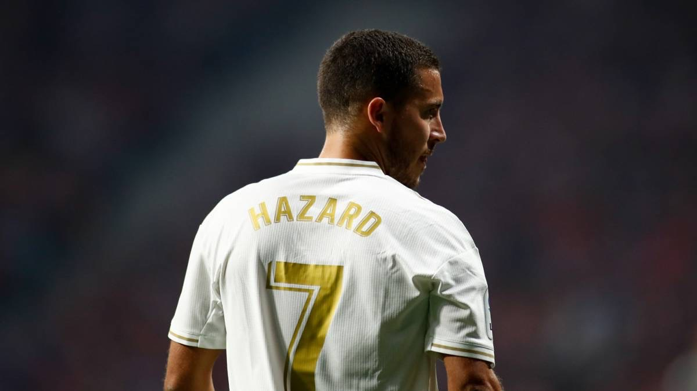

Eden Hazard
Eden Michael Hazard is a Belgian professional footballer who plays as a winger or attacking midfielder for Spanish club Real Madrid and captains the Belgium national team. On 4 June 2012, Chelsea officially confirmed on its website that the club had agreed terms with Lille for the transfer of Hazard. The midfielder agreed personal terms with the club and passed a medical examination. The transfer fee was reported to be priced at £32 million.
Upon signing for Chelsea, Hazard told the club's official website "I'm delighted to finally arrive here. It's a wonderful club and I can't wait to get started". Hazard was given the number 17, which was previously worn by José Bosingwa. On 18 July, Hazard made his Chelsea debut in the club's first pre-season friendly against the Seattle Sounders and played the majority of the match, opening his Chelsea scoring account.